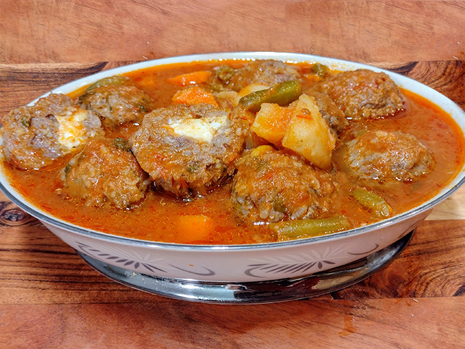

Receta de Albóndigas

La sopa de albóndigas con chipotle es una sopa tradicional mexicana. Esta receta es una combinación de albóndigas y salsa de jitomate con chipotle y un toque de hierbabuena que le aporta un sabor único.
Los pasos son bastante sencillos. Sin embargo, este es el tipo de receta que se disfruta desde el momento en que se empiezan a reunir todos los ingredientes. Puede que te lleve un poco de tiempo completar el plato, pero te prometo que vale la pena cada minuto que le dediques.
Utensilios
- Sartén
- Licuadora
- Cucharas
- Platos
- cacerola
Ingredientes
Albóndigas
- 1 Libra de carne de res molida (o de cerdo) or 1/2 kilo (500g)
- 1 taza hojas de hierbabuena fresca
- 1 huevo grande crudo
- ½ taza arroz blanco crudo
- 3 huevos duros grandes
- 2 cucharaditas sal
- 1 cucharaditas pimienta negra en polvo
Sopa
- 4 tazas caldo de pollo
- 3 chiles chipotles en adobo
- 6 jitomates medianos o grandes
- 1 cebolla mediana o grande
- 2 papas medianas y cortadas en pedazos medianos
- 2 zanahorias grandes y cortadas en rebanadas medianas
- 1 taza de ejotes congelados o frescos
- 3 ramitas de hierbabuena
- sal
- 2 cucharadas aceite para freir
Instrucciones
Preparacion de las Albóndigas
- Hervir huevos, quitar el cascarón y cortar en pedacitos. Guardar para un paso mas adelante
- Pon la carne molida en un bol grande, añadir un huevo crudo, 1⁄2 taza de arroz crudo, la hierbabuena picada, una cucharadita de sal y media cucharadita de pimienta al gusto. Luego mezcla todos los ingredientes.
- Agarra un poco de la mezcla de carne y forma una albóndiga de tamaño mediana (approx. 60g ó 1/4 de taza) Aplasta suavemente la albóndiga en tu mano. Pon algunos trozos de huevo duro en el centro y cubre el huevo formando una bola redonda de carne. Sigue haciendo las albóndigas de la misma manera hasta terminar la preparación de carne.
- Cuando tengas todas las albóndigas listas, mételas en el refrigerador.
Salsa de chipotle
- Pica los jitomates y la cebolla. Pon los 6 jitomates y la cebolla en una licuadora, añade el chile chipotle, una taza de caldo de pollo (o agua). Licua hasta obtener una consistencia suave. Reserva la preparación.
- En una olla grande agrega el aceite y las rodajas de cebollas para freírlas a fuego medio hasta que cambien de color a un cafe dorado.
- Cuando las rebanadas de cebolla estén listas, agrega la salsa de chipotle de la licuadora en la misma olla. Luego, agrega de 4 a 6 tazas de caldo de pollo (o agua) y sal al gusto. Por último, añade las papas, las zanahorias y los ejotes picados. Para darle más sabor, puedes añadir unas hojas de hierbabuena fresca. Deja que hierva primero para después agregar las albóndigas. Tomara unos 10 minutos
- Ya que el caldo comenzó a hervir, echa las albóndigas suavemente en la salsa hirviendo. Revuelve suavemente un poco y asegúrate de que las albóndigas estén sumergidas en el caldo. Ponle la tapa y cocina a fuego medio-bajo por 30 minutos.
- Después de los 30 minutos, revolvemos un poco y lo tapamos otra vez, y lo dejamos cocinar por 15 a 20 minutos más. Hasta que las verduras y el arroz estén cocinados por completo. Apagamos la estufa y dejamos que repose unos 10 minutos antes de servir a su familia.
Notas
La carne magra es recomendable para esta sopa para evitar un caldo muy grasoso. Algunas personas prefieren albondigas pequeñas, pero para esta receta las albondigas medianas son las perfectas. Necesitamos poder agregar el huevo duro, pero no terminar haciendo las albóndigas muy grandes. Freír cebolla antes de agregar el caldo es muy común en México, pero esta bien si quiere omitir esta paso. Los primero 30 minutos de cocción de la sopa (a fuego medio-bajo) probablemente tardara en verse algunas burbujas en unos 10 minutos. Esto es porque agregamos las albóndigas frías directo del refrigerador.Tal vez usted necesite ajustar el fuego de la estufa, para asegurarse de que las albondigas se estén cocinando en un hervor suave y constante (burbujas medianas a pequeñas). Para lograr un caldo de chipotle sabroso y unas albóndigas esponjaditas y tiernas.
Información Nutrimental
| 440.2 kcal = 1,841kj /por porción |
| Carbohidratos |
Energía |
Grasas |
Fibra |
Proteína |
Grasas saturadas |
Sodio |
Azúcares |
| 14.2 g |
440.2 kcal |
23 g |
2.6 g |
43.1 g |
6.9 g |
2268.6 mg |
7.1 g |
Contactano!!!
Git hub del administrador
ir al pincipio